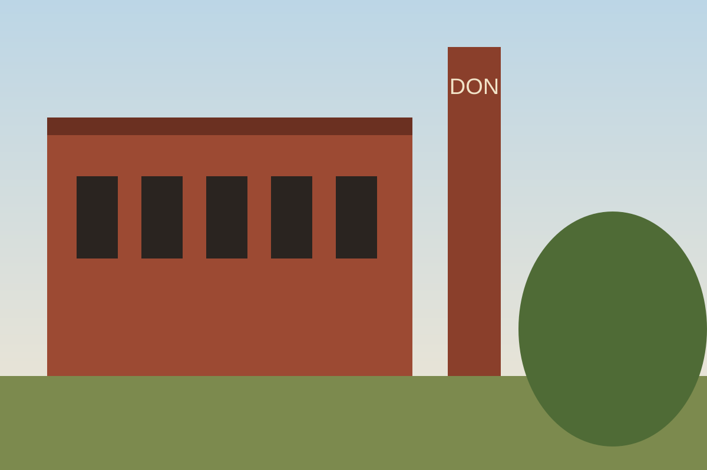
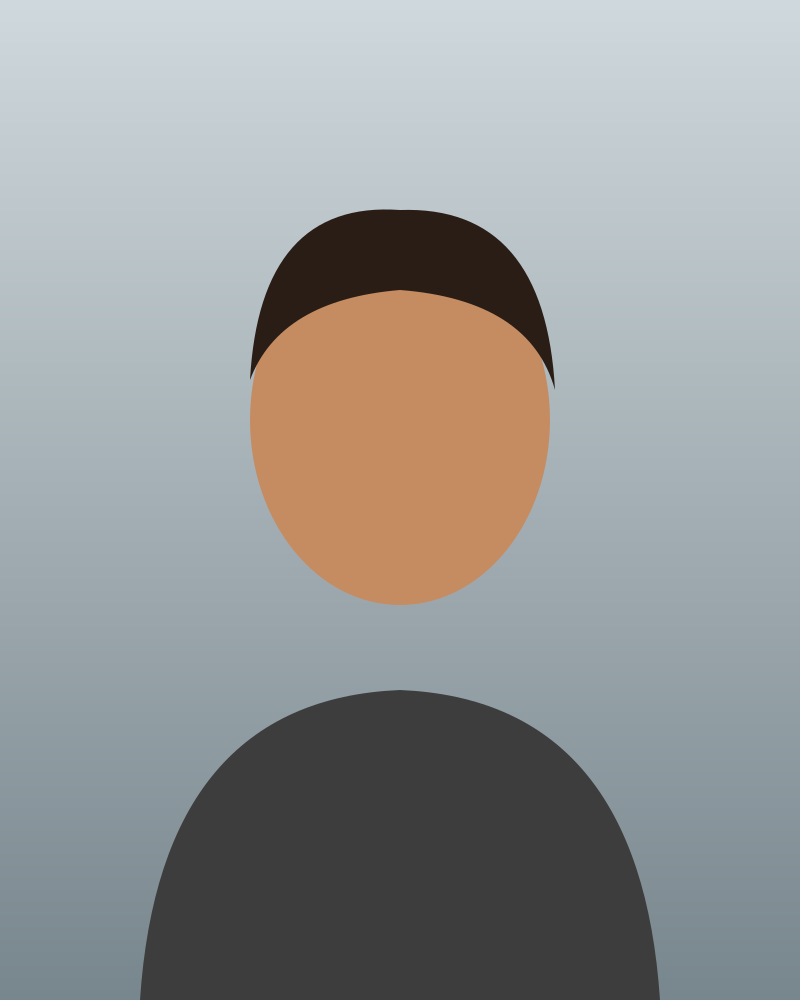
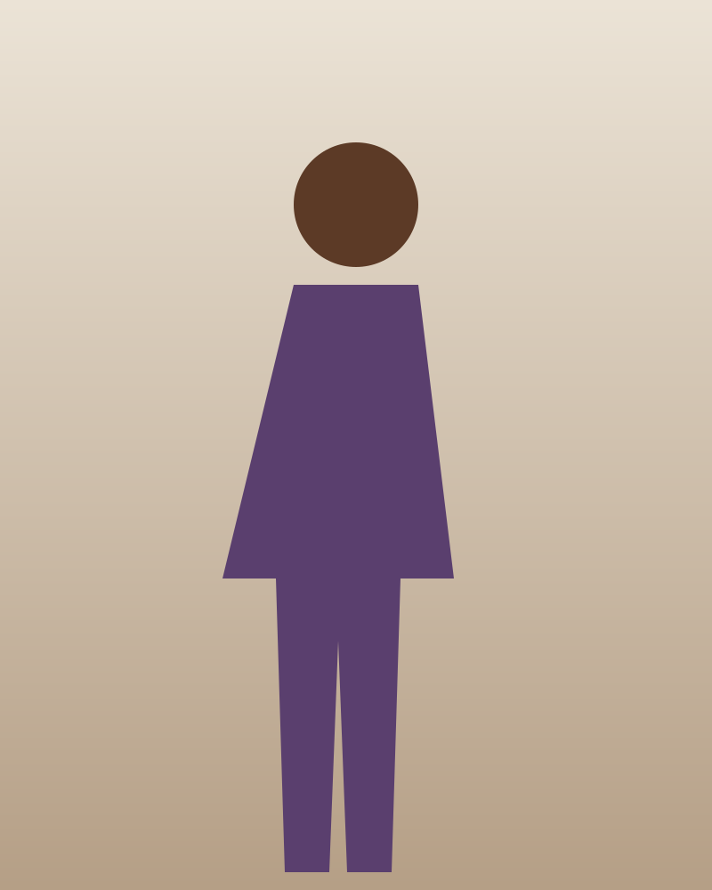

The image manager is how the admin builds a location's standard test shots, gallery and sample shots: an ordered list of rows, each with its thumbnail, its alt text and buttons to move or remove it, plus an upload area that shows every file's progress.
Every studio review has three standard test shots taken with the same setup, and a gallery from a real shoot; every outdoor spot has sample shots with a focal length and angle note. The image manager is the one place those are added, described, ordered and removed, inside the Images section of the editor (L2-057, L2-058).
Use it for any ordered set of images the admin uploads: standard test shots, gallery, sample shots. One <fieldset> per set, each with its own upload area.
The same row (.image-row--entry) orders guide entries, with a rank badge in place of the thumbnail (L2-060).
Don't use it to show photos to visitors; that is the shot grid and the lightbox. For a single file that is not an image set, use file upload.
Order is changed with Move up and Move down buttons, not by dragging, so it works with a keyboard, a switch or one finger (WCAG 2.5.7).
Thumbnail.image-row__thumb: 4:5 crop, --radius-sm, --color-bg-photo behind. The image is alt="" because the alt text field beside it describes it.
Meta.image-row__meta: position, file name and size ("2 of 3 · full-length.jpg · 4.6 MB"), muted small text that wraps anywhere.
Alt text fieldA required text field labelled "Alt text". Sample shots add focal length and angle note; guide entries use an editor's note textarea.
Actions.image-row__actions: small Move up, Move down and ghost Remove buttons. A row along the bottom on phones, a stretched column from 48rem.
Container.image-row: a grid of thumbnail and body (plus actions from 48rem), 1px --color-border-default, --radius-md, --space-3 padding.
The list (ol.image-list, 12px between rows) and the upload area (.upload-drop: a visually hidden input.file-input, its <label class="btn btn--sm"> and the accepted-types hint, inside a dashed edge) sit together in one <fieldset> whose legend names the set.
No list is drawn; one sentence says what is missing and why it matters, and the upload area stays.
Sample shot row (outdoor spots)

1 of 2 · sunrise-cliffs.jpg · 5.2 MB
Scarborough Bluffs: a sample shot carries its focal length and angle note in a .field-row under the alt text. Landscape files crop to the 4:5 thumbnail.
Entry row (guide editor)
Visitors see entries in this order. Move up and Move down change the rank.
Best for headshots. .image-row--entry sizes the first column to the rank badge. Entry removal is staged until Save and asks no confirmation, so Remove is a plain button here.
Pointer and focus states are forced with data-state; real pages get them from :hover, :focus-visible and :active. The ends of the list use aria-disabled="true", not disabled, so a button that just moved its row to the end keeps focus.
Image manager control states
Control
Default
Hover
Focus
Active
Disabled
Move up / down
Remove
Never disabled; the dialog refuses instead (see Remove).
Add images
Alt text
Same as focus.
No mock disables the upload or the alt text today; the disabled cells show what the stylesheet does if a page ever must (for example, while a save is in flight). Prefer leaving them enabled.
Rows
Image row states
State
Row
Attribute and behaviour
Ready
2 of 8 · gallery-02.jpg · 6.1 MB
No attribute. Uploaded, described, movable both ways.
Only image

1 of 1 · gallery-01.jpg · 5.2 MB
Both moves aria-disabled="true". They stay in the tab order; activating one does nothing.
Uploading

3 of 3 · gallery-03.jpg · 4.9 MB
Uploading… 45%
data-state="uploading": thumbnail at 50%, a progress bar with role="progressbar" and the value, Cancel upload instead of the row actions. Save changes is disabled until every upload ends (L2-057.6). When it finishes, the new alt text field takes focus (L2-057.1).
Failed
4 of 4 · gallery-04.jpg · 7.1 MB
gallery-04.jpg didn't upload. Check your connection.
data-state="failed": danger edge, image placeholder, the error in a role="alert" paragraph. Retry re-sends only this file (L2-057.7). Remove drops it at once with no dialog: nothing was saved.
Invalid alt text
1 of 1 · gallery-01.jpg · 5.2 MB
Describe this image
aria-invalid="true" + aria-describedby on the field after a refused save (L2-057.4). The form summary links straight to it.
Files refused before upload
JPEG, PNG, WebP or AVIF, up to 20 MB each.
studio-floorplan.svg isn't a supported image. Use JPEG, PNG, WebP or AVIF.
raw-export.tif is 25 MB. The limit is 20 MB.
Type or size refused in the browser (L2-057.2, L2-057.3): no row is created; the messages sit in the upload area in a role="alert" group. The server checks again.
Remove
Remove opens the remove-image dialog. Confirming stages the removal: the row goes, and Save changes makes it permanent (L2-058.2). If removing would leave a published studio with no standard test shot, the dialog refuses instead (L2-058.4); the count includes removals already staged in this edit.
Remove test shot 2?
It's removed when you save the studio. Test shot 1 stays.
full-length.jpg · alt text
Test shot 2, full length on the cyc; scuffs show where the wall meets the floor.
Can't remove this test shot
A published studio needs at least one standard test shot. Add another before removing this one.
Left: confirm, with the image and its alt text as a preview row (no actions), Cancel focused first. Right: refused, with one acknowledgement and no way to force it.
Both themes
1 of 3 · gallery-01.jpg · 5.2 MB
2 of 3 · gallery-02.jpg · 6.4 MB
Uploading… 80%
3 of 3 · gallery-03.jpg · 4.9 MB
gallery-03.jpg didn't upload. Check your connection.
1 of 3 · gallery-01.jpg · 5.2 MB
2 of 3 · gallery-02.jpg · 6.4 MB
Uploading… 80%
3 of 3 · gallery-03.jpg · 4.9 MB
gallery-03.jpg didn't upload. Check your connection.
Below 48rem a row is two columns, a 5rem thumbnail and the body, and the actions wrap in a row along the bottom across the full width (grid-column: 1 / -1). The small buttons grow to 44px (L2-065.1).
From 48rem a row is three columns: a 6rem thumbnail, the body, and the actions stacked in a column of equal-width buttons on the right.
Entry rows (--entry) swap the thumbnail column for auto, sized to the 40px rank badge, at both widths.
The body is min-width: 0 and the meta wraps anywhere, so a long file name ("raw-export-final-final-v3.jpg") never pushes the row wider than the screen. The sample-shot field row is one column below 36rem and two from 36rem.
The upload area wraps: the button, then the hint, then any refusal messages on their own full-width line.
Rows draw only an edge (--color-border-default, or --color-danger-border when failed) and sit on the editor section's --color-bg-surface. The thumbnail well is --color-bg-photo; photos keep their own colours in both themes. The upload area's dashed edge is --color-border-strong with --color-fg-muted text. Progress reads --color-action on --color-bg-subtle-hover. All are roles, so the dark theme needs no extra rules.
/* A failed row only changes its edge; the error text and icon carry the meaning. */
.image-row[data-state="failed"] { border-color: var(--color-danger-border); }
Native elements, no ARIA widget: a <fieldset> and <legend> name the set, an ordered list (<ol>) carries the order ("list, 3 items"), buttons move and remove, and a real <input type="file"> is the upload control, with its <label> styled as a button. Remove opens an APG Alert dialog-style confirmation (role="dialog", aria-modal="true", labelled by its title and described by its message). Uploads use role="progressbar"; errors use role="alert".
Keyboard
Key
Action
Tab / Shift+Tab
Moves through each row in order: alt text (and sample or note fields), Move up, Move down, Remove; then the upload button. aria-disabled moves stay in the order.
Enter, Space
On Move up or Move down: moves the row one place, keeps focus on the same button in its new position and announces the new position. On Remove: opens the dialog. On the upload button: opens the system file picker.
Esc
In the remove dialog: closes it, same as Cancel, and returns focus to that row's Remove.
Focus
After a move, focus stays on the button that was pressed, now in the row's new place; if the row reached the end, that button becomes aria-disabled but keeps focus, which is why the ends never use disabled. When an upload finishes, its alt text field takes focus (L2-057.1). The remove dialog opens with focus on Cancel (the safe choice) or on "Got it" when refused; on close focus returns to Remove, or to the next row's Remove (or the upload button) when the row is gone. The upload button shows the ring through .file-input:focus-visible + label.
Labelling
Every repeated button carries its object in visually hidden text: "Move up: test shot 1", "Remove gallery image 2", "Retry gallery-04.jpg", "Cancel upload gallery-02.jpg". Moves are announced in a polite live region: "Test shot 3, now 2 of 3", or for guide entries "Leslieville Daylight Studio, now 2 of 2". The progress bar is named "Uploading gallery-02.jpg" and carries the value, so the visible "Uploading… 45%" is aria-hidden. Thumbnails are alt="": the alt text field next to them is the description, and reading both would repeat it. The guide entry rank badge is aria-hidden; the hidden "Entry 1:" in the heading says the rank instead.
Contrast
Meta on the editor surface
Alt text field edge
Upload area edge and hint
Error text in a row
Invalid field edge
Progress fill on track
Placeholder icon on failed thumbnail
Rank badge number
Focus ring on the editor surface
Remove dialog: danger label
Remove dialog: preview text
Row edges are decorative. The failed edge (--color-danger-border) only adds emphasis: the placeholder icon, the error sentence and the Retry button carry the state.
Motion
The progress bar animates its width over --duration-deliberate, which reduced motion zeroes, so it jumps to each new value. Moves re-render the list without animation. Nothing else moves.
Touch
Row buttons are 44px tall below 48rem with 8px between them (L2-065.1); the actions wrap rather than shrink. There is no drag to reorder, so no gesture is needed (2.5.7). The upload button is the whole target; dropping files on the area is not offered.
Legends name the set: "Standard test shots", "Gallery", "Sample shots", "Entries".
Upload buttons say what is added: "Add test shots", "Add gallery images". The hint is always "JPEG, PNG, WebP or AVIF, up to 20 MB each."
Meta: "{position} of {total} · {file name} · {size in MB, one decimal}". Position is 1-based and updates after every move.
Alt text says what the photo shows, not that it is a photo: "Test shot 1, headshot: soft octabox light from 45 degrees, gentle shadow side, true skin tones." The required message is "Describe this image".
Errors name the file and the fix: "gallery-04.jpg didn't upload. Check your connection.", "raw-export.tif is 25 MB. The limit is 20 MB."
Remove dialog: the title asks with the object ("Remove test shot 2?"), the description says when it takes effect and what stays ("It's removed when you save the studio. Test shot 1 stays."), the danger button names the loss ("Remove test shot"). A refusal says what to do instead ("Add another before removing this one.").
At the ends, mark the move aria-disabled so it keeps focus after the last move.A native disabled end drops focus to the page when the row arrives there, and the bare "Move up" doesn't say which image.Remove is a button that opens the confirmation dialog.
Remove triggers are <a href> links to the dialog's mock page in every editor mock; the system uses <button type="button" aria-haspopup="dialog">. The guide editor and failed-row Remove are already buttons.
The guide editor styles each entry heading inline (<h3 style="font: var(--text-h4)">). An .image-row__title rule is proposed; the example above copies the mock until it exists.
The upload refusal group in upload-failed sets flex-basis: 100% inline; an .upload-drop__errors rule is proposed.
The Corktown Garage Studio editor mocks reuse Liberty Cyc House test-shot images; the examples here use The Junction Loft's own test shots from the published editor.
The mocks show no announcement for moves on images (only the guide editor's note asks for one); the system announces moves the same way everywhere (L2-058.3).